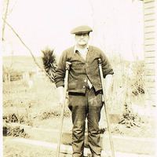
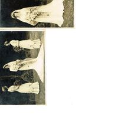
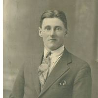
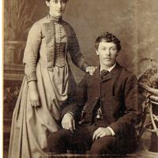
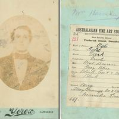
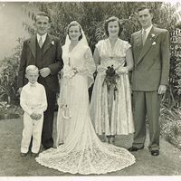
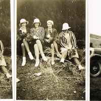
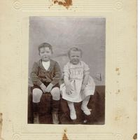
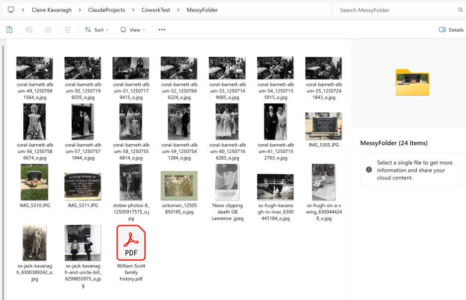
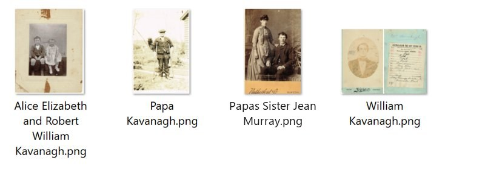

Who it's for
You have a folder full of files, such as downloads, photos, receipts or an old project, and want to:
- Find things without hunting
- Have your AI tidy it safely: you see the plan first, and nothing is deleted
- Tidy the next folder with one sentence
Work files? Check your company is happy for an AI tool to see them first. The course asks you.
You'll end up with
- One tidy folder, sorted the way you look for things
- Duplicates set aside with a note, never deleted
- A short note in the folder saying what's where
- A saved "folder organiser" you can use again with one sentence
You'll need
- 10 to 20 files you don't mind practising on (you'll copy them).
- An AI tool that can open a folder on your computer, such as Claude's desktop app. This usually needs a paid plan, and the course checks yours.
- No folder access on your plan? The course gives you a plan to follow by hand instead.
- For work files: your company's OK for AI to see them.
See it first
A plan first, then the tidy-up
This is my own test: old family photos and a PDF, all in one folder. It showed me a plan, I changed it once, and then it did the moving.

Papa Kavanagh.png
Scan_20220424.png
Jack McKenzie portrait.png
Papas Sister Jean Murray.png
William Kavanagh.png
Peter Edna Jean Geoff Greg.png
Molly Alice Hazel Fay.png
Alice Elizabeth and Robert William Kavanagh.pngWhat's where, and what still needs you.
Images/ 12 photos Documents/ 1 PDFOK to go ahead?
Kavanagh/ McKenzie/ Greaves/ Weddings/ Group Photos/ Unsorted Scans/ Family Tree/
Make a Test Folder and copy 10 to 20 files into it. Mine was old family photos and a PDF.
From my own test
Before and after
The real thing, from my computer. The bit that made me smile: "Papa's sister Jean Murray" ended up in the Kavanagh folder. It worked out from the file name that she belonged with Papa's side of the family.


How it works
Three steps
Copy
Copy the instructions below, or download them as a file.
Paste
Paste them into a new chat in your AI tool. In Claude, use the desktop app's Cowork mode so it can open folders.
Answer
It takes you one step at a time: test folder, plan, tidy-up, check, then saving your folder organiser.
You practise on copies, so your real files are never at risk. It only creates folders and moves files. It never renames or deletes anything.
New to these words? Skills, README and agents are explained in Words worth knowing.
The course
Copy this into your AI chat
Copy and paste the text below into your AI tool, for example Claude's desktop app, and it guides you through each step. It shows you the plan before it moves anything.
Stuck? Ask it for help. A screenshot, or a description of what's on your screen, helps it guide you. The instructions include links to the official help pages, so if something has changed, your AI can keep up.
What's a .md file? It's like a Notepad (.txt) file: plain text with no extra formatting, which makes it easy for AI tools to read.
Loading… If nothing appears, use Download .md above.
Official help
Straight from the AI tools
Features and plans change often. These pages are always the latest version, and the course tells your AI to check them as it goes.
Other AI tools
Search your tool's help pages for "work with local files" and "custom instructions". If it can't open folders, the course still works: you paste in the file names and follow its plan by hand.
Want more of your week back?
A tidy folder is a start. In a Power Hour we pick the next thing eating your week and fix it together. Or book a free 15-minute call to talk it through.
info@liminalcx.com